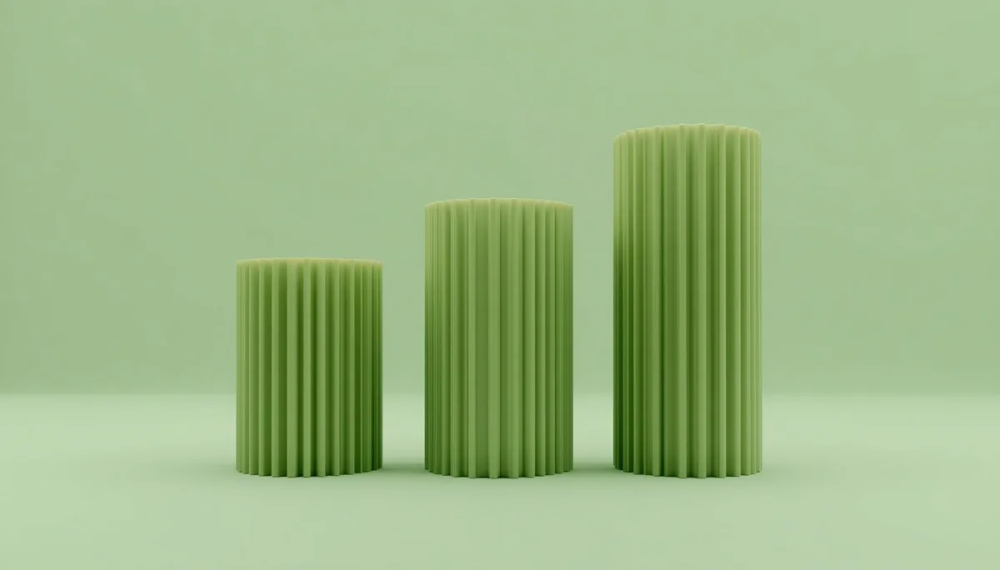

Claves del apego seguro: vínculos sólidos y regulación emocional
El apego seguro es la base invisible sobre la cual los niños construyen su confianza hacia el mundo, desarrollan una autoestima equilibrada y aprenden a regular sus emociones más intensas. No se trata de evitar los conflictos o la frustración, sino de ofrecer una presencia adulta disponible, empática y constante que sirva como puerto seguro al que regresar tras explorar el entorno. He reunido aquí una guía serena para acompañar el desarrollo afectivo con respeto y empatía. Pincha en cada tarjeta para profundizar en cada tema.

Los cimientos del vínculo
Presencia, sintonía y disponibilidad emocional como cimientos indispensables para que el menor explore el mundo con confianza y seguridad interior.

Acompañar los desbordamientos
Descubre cómo funciona la corresregulación emocional para sostener las tormentas infantiles desde la calma adulta sin recurrir al castigo ni al aislamiento.
Normas claras con amor y firmeza
Establecer pautas coherentes aporta seguridad y contención. Aprende a poner límites respetuosos que guíen su conducta sin apagar su autonomía.
Sanar nuestros propios patrones
Tomar consciencia de nuestra historia familiar y heridas de infancia para evitar la transmisión involuntaria de dinámicas de apego inseguro.
Explorar el mundo con seguridad
Cómo fomentar la independencia progresiva y la confianza en sus propias decisiones sabiendo que tienen un refugio seguro al que volver.
Escucha activa y validación
Aprende a validar sus emociones sin minimizar lo que sienten, construyendo un canal de diálogo sincero, libre de juicios y lleno de confianza.

Celos y vínculos entre hermanos
Estrategias respetuosas para acompañar la llegada de nuevos miembros y gestionar los conflictos fraternales desde la equidad afectiva.
Cultivar la resiliencia desde el afecto
Cómo dotar a la infancia de recursos internos sólidos para afrontar la frustración, los cambios y los pequeños retos cotidianos con fortaleza.